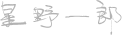

2010年の「九州ユーザーグループ対抗 CM大賞」から始まり、すでに5回開催された九州内ユーザーグループによるムービー企画。
このAUGM大分でのユーザーグループ主導企画を始めるに当たり、わたしたちはこんな思いを持っていました。
「ムービーを作る体験をとおして、各ユーザーグループ内の結束を強め、また九州沖縄のユーザーグループの親睦をより深める機会としたい」
ムービーはご存知のとおり、映像はもちろん、音楽なども含めた総合芸術で、多くの技術や協力が必要です。
それは、基本的にはだれかひとりで作り上げるというものではありません。
そういったムービーを作るクリエイティブな活動をとおして、ユーザーグループ内のメンバーの皆さんで協力しあい、楽しんでいただきたい。
また、そんな心のこもった作品を持ち寄り、新たなユーザーグループ間の交流の機会を作りたい。
そんな思いで、5年前に九州沖縄ユーザーグループによるムービー企画を始めました。
第6回を行うに当たり、その初心を新たにし、ここに檄（ふれぶみ）として書き記します。
AUGM大分2015実行委員長
映像時間を100秒とし、映像の縦横比は、16:9。
Mac＋プロジェクタで上映できるものとします。
実写、アニメ、CGなどいずれもOKです。時間はぴったり100秒でお願いします。上映時には、会場の環境に合わせて最適化する場合があります。
それぞれのユーザーグループらしさを表現したショートムービー。
各ユーザーグループの皆さんで協力し、UGらしさを存分に表現した作品をお待ちしています。
2015年1月31日（土）を応募期限といたします。
期日までに主催宛てにムービーファイルをお送りください（送付方法はお任せします）。
1UGにつき1作品でお願いします。
各UGのムービー上映と代表者（UGの代表・会長に限ることはありません）による紹介を行い、審査員に講評していただきます。
例年同様、審査員によって各賞を決める予定です。
イベント後、YouTubeおよび、AUGM大分Webサイトにて各作品を公開します。
公開しますので、各権利関係はクリアしておいてください。
Webサイトでは、特別映像（後述）を掲載するスペースも用意します。
AUGM大分Webサイトにて各作品を公開するにあたり、作品の他に各UGに用意いただいた特別映像を掲載いたします。
余裕がありましたら、メイキングやNG集、作品への思いを語ったインタビューなどの動画をご用意ください。